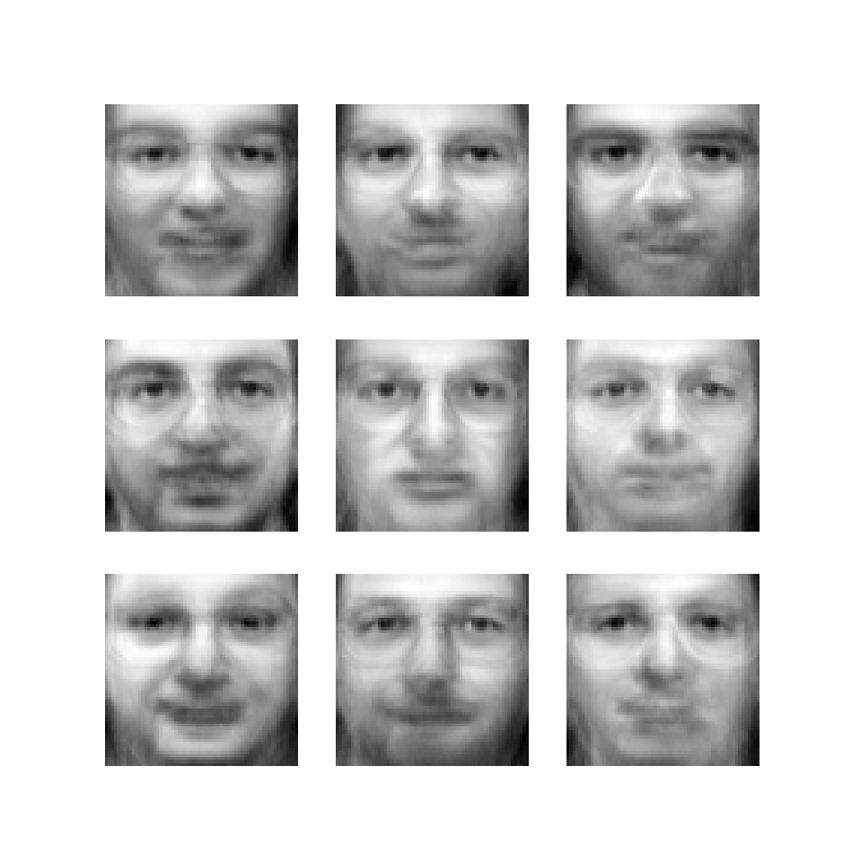
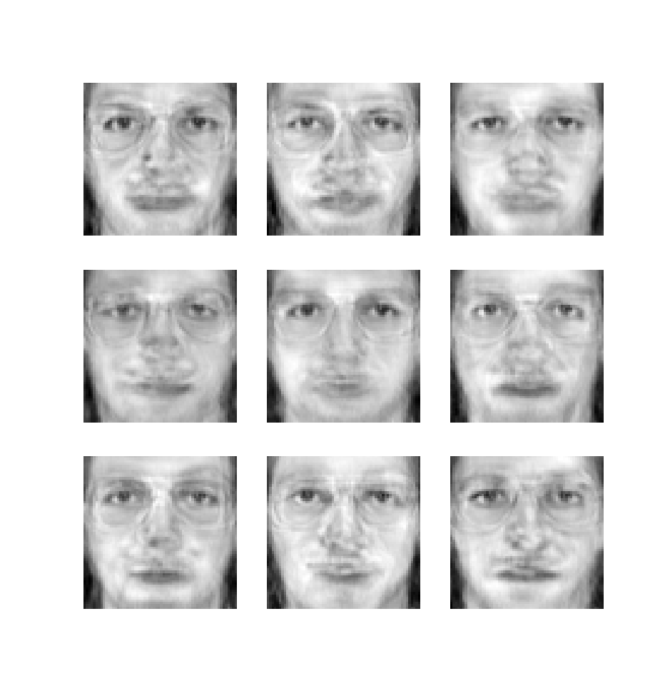
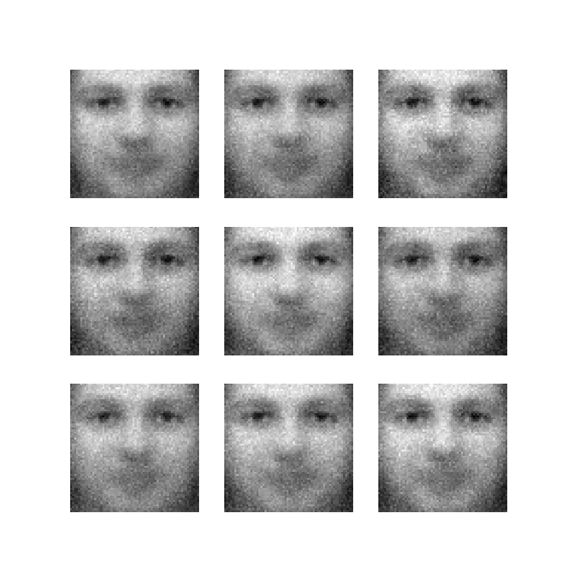
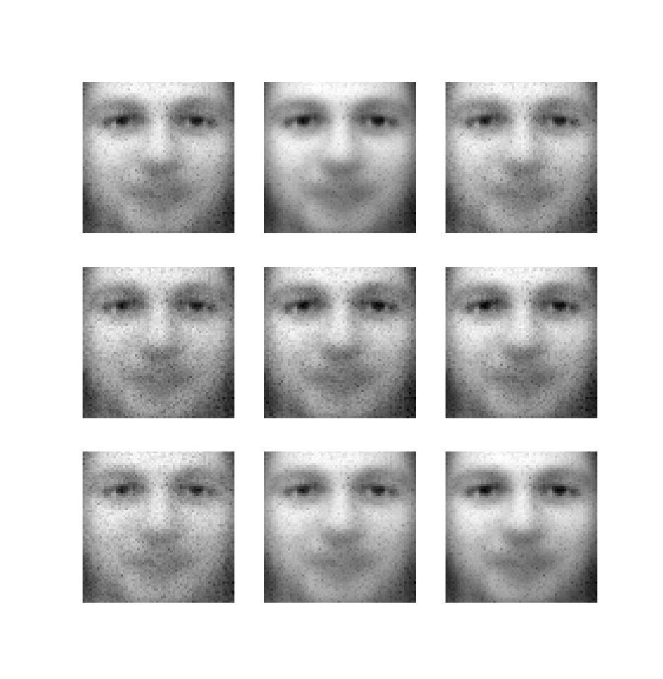

# init repo notebook
!git clone https://github.com/rramosp/ppdl.git > /dev/null 2> /dev/null
!mv -n ppdl/content/init.py ppdl/content/local . 2> /dev/null
!pip install -r ppdl/content/requirements.txt > /dev/null
LAB 06.01.02 - Variational Autoencoder#
In this lab, you’ll see the relationship between classical unsupervised methods like PCA and the variational autoencoder (VAE).
First, let us import the grading libraries:
import inspect
from rlxmoocapi import submit, session
course_id = "ppdl.v1"
endpoint = "https://m5knaekxo6.execute-api.us-west-2.amazonaws.com/dev-v0001/rlxmooc"
lab = "L06.01.02"
Please, use your credentials to log into the platform:
session.LoginSequence(
endpoint=endpoint,
course_id=course_id,
lab_id=lab,
varname="student"
);
import os
ses = session.Session(endpoint)
teacher = ses.login(
user_id=os.environ["USER_ID"],
pwd=os.environ["PASSWORD"],
course_id=course_id,
)
First, let us import the required libraries:
import matplotlib.pyplot as plt
import numpy as np
from tqdm.notebook import tqdm
import tensorflow as tf
from tensorflow.keras.models import Model, Sequential
from tensorflow.keras.layers import Dense, Input
from tensorflow.keras.losses import BinaryCrossentropy, binary_crossentropy
from tensorflow.keras.optimizers import Adam
from sklearn.decomposition import PCA
from sklearn.datasets import fetch_olivetti_faces
from sklearn.preprocessing import StandardScaler
from IPython.display import display
In this lab, We’ll use the Olivetti Faces dataset, which contains a dataset of (64, 64) gray scale images with different faces:
X, _ = fetch_olivetti_faces(return_X_y=True)
Let’s see some images of the dataset:
fig, axes = plt.subplots(3, 3, figsize=(10, 10))
for i in range(3):
for j in range(3):
ax = axes[i, j]
idx = np.random.randint(X.shape[0])
ax.imshow(X[idx].reshape(64, 64), cmap="gray")
First, let us train a PCA model with the images:
pca = PCA(n_components=128).fit(X)
components = tf.constant(pca.components_)
print(components.shape)
This model can be seen as a classical autoencoder that encodes (transform) and decodes (inverse_transform), as follows:
X_t = pca.transform(X)
print(X_t.shape)
Also, We can compute the reconstruction of the images:
X_r = pca.inverse_transform(X_t)
print(X_r.shape)
Let’s see a comparison between the original images and the reconstruction:
fig, axes = plt.subplots(2, 5, figsize=(10, 5))
for i in range(5):
idx = np.random.randint(X.shape[0])
ax = axes[0, i]
ax.imshow(X[idx].reshape(64, 64), cmap="gray")
ax = axes[1, i]
ax.imshow(X_r[idx].reshape(64, 64), cmap="gray")
axes[0, 0].set_ylabel("Original")
axes[1, 0].set_ylabel("Reconstruction")
fig.tight_layout()
Internally, the PCA model is doing the following operations:
# transform
scaler = StandardScaler(with_std=False).fit(X)
X_s = scaler.transform(X)
X_t = X_s @ pca.components_.T # transform
print(X_t.shape)
# inverse transform
X_r = X_t @ pca.components_
X_r = scaler.inverse_transform(X_r)
print(X_r.shape)
Let’s see that the results are equivalent:
fig, axes = plt.subplots(2, 5, figsize=(10, 5))
for i in range(5):
idx = np.random.randint(X.shape[0])
ax = axes[0, i]
ax.imshow(X[idx].reshape(64, 64), cmap="gray")
ax = axes[1, i]
ax.imshow(X_r[idx].reshape(64, 64), cmap="gray")
axes[0, 0].set_ylabel("Original")
axes[1, 0].set_ylabel("Reconstruction")
fig.tight_layout()
fig.show()
Task 1#
In this task, you must fit a decoder model for a variational autoencoder that replicates the PCA model, specifically, you have the following model:
Where \(\mathbf{x}\) is an input image, \(\mathbf{W}\) are the PCA components, \(\mu\) is the VAE’s mean (in this case, the PCA transformation), \(\mathbf{z}\) is the sample from the latent distribution and \(\tilde{\mathbf{x}}\) is the reconstruction.
You must implement the following methods:
encode: this method must compute \(\mu\) from \(\mathbf{x}\) and \(\mathbf{W}\).reparameterize: this method must compute \(\mathbf{z}\) from \(\mu\).decode: this method must compute the reconstruction \(\tilde{\mathbf{x}}\) from \(\mathbf{z}\).
def variable_decoder(pca_components):
class VariableDecoder(Model):
def __init__(self, pca_components, *args, **kwargs):
super(VariableDecoder, self).__init__(*args, **kwargs)
self.components = pca_components
self.decoder = Sequential([
Input(shape=(pca_components.shape[0],)),
Dense(
pca_components.shape[1], activation="sigmoid",
use_bias = False
)
])
def encode(self, x):
# YOUR CODE HERE
...
def reparameterize(self, mean):
# YOUR CODE HERE
...
def decode(self, z):
# YOUR CODE HERE
...
def call(self, x):
mu = self.encode(x)
z = self.reparameterize(mu)
x_rec = self.decoder(z)
return x_rec
return VariableDecoder(pca_components)
Let’s validate the model with a simple test case:
components = tf.constant([
[1.0, 1.5],
[-2.3, 4.5],
[6.4, 3.2]
])
X = tf.constant([
[2.3, -1.2],
[3.6, 4.2],
[1.1, 0.2]
])
m1 = variable_decoder(components)
m1.decoder.layers[-1].set_weights((components, ))
m1.build(X.shape)
m1.summary()
The output of the following cell must be:
<tf.Tensor: shape=(3, 3), dtype=float32, numpy=
array([[ 0.49999988, -10.690001 , 10.88 ],
[ 9.9 , 10.62 , 36.48 ],
[ 1.4000001 , -1.6299999 , 7.6800003 ]], dtype=float32)>
mu = m1.encode(X)
display(mu)
The output of the following cell must contain values similar (depends on sampling) to:
<tf.Tensor: shape=(3, 3), dtype=float32, numpy=
array([[ -0.30128342, -10.981316 , 10.142529 ],
[ 8.948406 , 10.770711 , 35.61869 ],
[ 2.1709187 , -3.2726154 , 7.2098346 ]], dtype=float32)>
z = m1.reparameterize(mu)
display(z)
The output of the following cell must be:
<tf.Tensor: shape=(3, 2), dtype=float32, numpy=
array([[1.0000000e+00, 3.5840928e-06],
[1.0000000e+00, 1.0000000e+00],
[1.0000000e+00, 1.0000000e+00]], dtype=float32)>
display(m1.decode(mu))
Model definition:
m1 = variable_decoder(pca.components_)
m1.build(X.shape)
m1.summary()
Let’s compile the model using the binary cross-entropy loss:
m1.compile(
loss=BinaryCrossentropy(),
optimizer=Adam(learning_rate=1e-2)
)
We can train the model:
norm = StandardScaler(with_std = False)
X_s = norm.fit_transform(X)
m1.fit(X_s, X_s, epochs=100, batch_size=400)
Now, We can generate random images using the trained model, for this, we compute the mean of the latent representations and use this to generate random vectors:
mu = tf.reduce_mean(X_s @ tf.transpose(components), axis=0)
random_vectors = tf.random.normal(
mean=mu, stddev=1., shape=(9, components.shape[0])
)
rec_imgs = norm.inverse_transform(
m1
.decoder(random_vectors)
.numpy()
.reshape(9, -1)
)
We can visualize the generated images:
fig, axes = plt.subplots(3, 3, figsize=(10, 10))
cont = 0
for i in range(3):
for j in range(3):
ax = axes[i, j]
ax.imshow(rec_imgs[cont].reshape(64, 64), cmap="gray")
ax.axis("off")
cont += 1
The output of the last cell must be similar to the following image:
{kind=link}
def grader1(functions, variables, caller_userid):
import numpy as np
import tensorflow as tf
from tensorflow.keras.models import Model, Sequential
from tensorflow.keras.layers import Dense, Input
namespace = locals()
for f in functions.values():
exec(f, namespace)
variable_decoder = namespace["variable_decoder"]
msg = "Testing your code with 10 random cases.</br>"
for _ in range(10):
x = tf.random.normal(shape=(10_000, 2))
components = tf.random.normal(shape=(2, 2))
model = variable_decoder(components)
encoded = model.encode(x)
if not isinstance(encoded, tf.Tensor):
msg += f"<b>Your encode method must return a tensorflow's tensor.</b></br>"
return 0, msg
encoded = encoded.numpy()
encoded_teacher = (x @ tf.transpose(components)).numpy()
if not np.allclose(encoded, encoded_teacher):
msg += f"<b>Wrong encode method.</b></br>"
return 0, msg
z = model.reparameterize(encoded)
if not isinstance(z, tf.Tensor):
msg += f"<b>Your reparameterize method must return a tensorflow's tensor.</b></br>"
return 0, msg
sample = tf.random.normal(mean=0., stddev=1., shape=encoded.shape)
z_teacher = sample + encoded
z = z.numpy()
z_teacher = z_teacher.numpy()
if not np.allclose(z.mean(axis=0), z_teacher.mean(axis=0), atol=0.5):
msg += f"<b>Wrong reparameterize method.</b></br>"
return 0, msg
decode = model.decode(z)
if not isinstance(decode, tf.Tensor):
msg += f"<b>Your reparameterize method must return a tensorflow's tensor.</b></br>"
return 0, msg
decode = decode.numpy()
decode_teacher = model.decoder(z).numpy()
if not np.allclose(decode, decode_teacher):
msg += f"<b>Wrong decode method.</b></br>"
return 0, msg
return 5, msg + "<b>Success!</b>"
Use the following cell to grade your code:
student.submit_task(namespace=globals(), task_id="T1");
Task 2#
In this task, you must fit an encoder model for a variational autoencoder that replicates the PCA model, specifically, you have the following model:
Where \(\mathbf{x}\) is an input image, \(\mathbf{W}\) are the PCA components, \(\mu\) is the VAE’s mean, \(\sigma\) is the VAE’s standard deviation, \(\mathbf{z}\) is the sample from the latent distribution and \(\tilde{\mathbf{x}}\) is the reconstruction.
You must implement the following methods:
encode: this method must compute \(\mu\) and \(\log{(\sigma) ^ 2}\) using the encoder.reparameterize: this method must compute \(\mathbf{z}\) from \(\mu\) and \(\log{(\sigma ^ 2)}\).decode: this method must compute the reconstruction \(\tilde{\mathbf{x}}\) from \(\mathbf{z}\) using \(\mathbf{W}\) (you must apply a sigmoid function to the decoder’s output to keep the data in the range \([0, 1]\)).
def variable_encoder(components):
class VariableEncoder(Model):
def __init__(self, components, *args, **kwargs):
super(VariableEncoder, self).__init__(*args, **kwargs)
self.encoder = Sequential([
Input(shape=(components.shape[1],)),
Dense(
components.shape[0] * 2, activation="linear",
use_bias = False
)
])
self.components = components
def encode(self, x):
#YOUR CODE HERE
...
def reparameterize(self, mu, log_var):
#YOUR CODE HERE
...
def decode(self, z):
#YOUR CODE HERE
...
@tf.function
def call(self, x):
mu, log_var = self.encode(x)
z = self.reparameterize(mu, log_var)
x_rec = self.decode(z)
return x_rec
return VariableEncoder(components)
Let’s validate the model with a simple test case:
components = tf.constant([
[1.0, 1.5],
[-2.3, 4.5],
[6.4, 3.2]
])
X = tf.constant([
[2.3, -1.2],
[3.6, 4.2],
[1.1, 0.2]
])
m2 = variable_encoder(components)
m2.encoder.layers[-1].set_weights((tf.concat([tf.transpose(components)] * 2, axis=1), ))
m2.build(X.shape)
m2.summary()
The output of the following cell must be:
<tf.Tensor: shape=(3, 3), dtype=float32, numpy=
array([[ 0.49999988, -10.690001 , 10.88 ],
[ 9.9 , 10.62 , 36.48 ],
[ 1.4000001 , -1.6299999 , 7.6800003 ]], dtype=float32)>
<tf.Tensor: shape=(3, 3), dtype=float32, numpy=
array([[ 0.49999988, -10.690001 , 10.88 ],
[ 9.9 , 10.62 , 36.48 ],
[ 1.4000001 , -1.6299999 , 7.6800003 ]], dtype=float32)>
mu, logvar = m2.encode(X)
display(mu)
display(logvar)
The output of the following cell must contain values similar (depends on sampling) to:
<tf.Tensor: shape=(3, 3), dtype=float32, numpy=
array([[ 2.3777792e+00, -1.0683963e+01, 1.4963301e+02],
[ 2.2756420e+01, 1.2129482e+02, -4.9136872e+07],
[ 1.9654572e-01, -1.8794684e+00, -7.5251245e+00]], dtype=float32)>
z = m2.reparameterize(mu, logvar)
display(z)
The output of the following cell must be:
<tf.Tensor: shape=(3, 2), dtype=float32, numpy=
array([[1.0000000e+00, 3.5840928e-06],
[1.0000000e+00, 1.0000000e+00],
[1.0000000e+00, 1.0000000e+00]], dtype=float32)>
display(m2.decode(mu))
Model definition:
m2 = variable_encoder(components)
m2.build(X.shape)
m2.summary()
Let’s compile the model using the binary cross-entropy loss:
m2.compile(
loss=BinaryCrossentropy(),
optimizer=Adam(learning_rate=1e-3)
)
We can train the model:
norm = StandardScaler(with_std = False)
X_s = norm.fit_transform(X)
m2.fit(X_s, X_s, epochs=100, batch_size=400)
Now, We can generate some images that are similar to a given image (in this case, the first image):
x_test = X_s[:1]
X_test = tf.concat([x_test] * 9, axis=0)
x_rec = m2(X_test)
rec_imgs = norm.inverse_transform(
x_rec
.numpy()
.reshape(9, -1)
)
Let’s visualize them:
fig, ax = plt.subplots()
ax.imshow(tf.reshape(X[:1], (64, 64)), cmap="gray")
ax.axis("off")
ax.set_title("Original Image")
fig, axes = plt.subplots(3, 3, figsize=(10, 10))
cont = 0
for i in range(3):
for j in range(3):
ax = axes[i, j]
ax.imshow(rec_imgs[cont].reshape(64, 64), cmap="gray")
ax.axis("off")
cont += 1
The last output cell must be similar to the following image:
{kind=link}
def grader2(functions, variables, caller_userid):
import numpy as np
import tensorflow as tf
from tensorflow.keras.models import Model, Sequential
from tensorflow.keras.layers import Dense, Input
namespace = locals()
for f in functions.values():
exec(f, namespace)
variable_encoder = namespace["variable_encoder"]
msg = "Testing your code with 10 random cases.</br>"
for _ in range(10):
x = tf.random.normal(shape=(10_000, 2))
components = tf.random.normal(shape=(2, 2))
model = variable_encoder(components)
mu, log_var = model.encode(x)
if not isinstance(mu, tf.Tensor):
msg += f"<b>Your encode method must return a tuple of tensorflow's tensors.</b></br>"
return 0, msg
if not isinstance(log_var, tf.Tensor):
msg += f"<b>Your encode method must return a tuple of tensorflow's tensors.</b></br>"
return 0, msg
params = model.encoder(x)
mu_teacher, log_var_teacher = tf.split(
params, num_or_size_splits=2, axis=1
)
mu_student = mu.numpy()
log_var_student = log_var.numpy()
mu_teacher = mu_teacher.numpy()
log_var_teacher = log_var_teacher.numpy()
if not np.allclose(mu_student, mu_teacher):
msg += f"<b>Wrong mu parameter in the encoder method.</b></br>"
return 0, msg
if not np.allclose(log_var_student, log_var_teacher):
msg += f"<b>Wrong log_var parameter en the encoder method.</b></br>"
return 0, msg
z = model.reparameterize(mu, log_var)
if not isinstance(z, tf.Tensor):
msg += f"<b>Your reparameterize method must return a tensorflow's tensor.</b></br>"
return 0, msg
sample = tf.random.normal(mean=0., stddev=1., shape=mu.shape)
z_teacher = sample * tf.exp(log_var * .5) + mu
z = z.numpy()
z_teacher = z_teacher.numpy()
if not np.allclose(z.mean(axis=0), z_teacher.mean(axis=0), atol=0.5):
msg += f"<b>Wrong reparameterize method.</b></br>"
return 0, msg
decode = model.decode(z)
if not isinstance(decode, tf.Tensor):
msg += f"<b>Your reparameterize method must return a tensorflow's tensor.</b></br>"
return 0, msg
decode = decode.numpy()
decode_teacher = tf.sigmoid(z @ components).numpy()
if not np.allclose(decode, decode_teacher):
msg += f"<b>Wrong decode method.</b></br>"
return 0, msg
return 5, msg + "<b>Success!</b>"
Use the following cell to grade your code:
student.submit_task(namespace=globals(), task_id="T2");
Task 3#
In this task you must implement the full VAE model which must perform the following operations:
Where \(\mathbf{x}\) is an input image, \(\mu\) is the VAE’s mean, \(\sigma\) is the VAE’s standard deviation, \(\mathbf{z}\) is the sample from the latent distribution and \(\tilde{\mathbf{x}}\) is the reconstruction.
You must implement the following methods:
encode: this method must compute \(\mu\) and \(\log{(\sigma) ^ 2}\) using the encoder.reparameterize: this method must compute \(\mathbf{z}\) from \(\mu\) and \(\log{(\sigma ^ 2)}\).decode: this method must compute the reconstruction \(\tilde{\mathbf{x}}\) from \(\mathbf{z}\).
def vae(n_components, input_size):
class Vae(Model):
def __init__(self, n_components, input_size, *args, **kwargs):
super(Vae, self).__init__(*args, **kwargs)
self.encoder = Sequential([
Input(shape=(input_size, )),
Dense(
256, activation="relu"
),
Dense(
128, activation="relu"
),
Dense(
n_components * 2, activation="linear",
use_bias = False
)
])
self.decoder = Sequential([
Input(shape=(n_components, )),
Dense(
128, activation="relu"
),
Dense(
256, activation="relu"
),
Dense(
input_size, activation="sigmoid",
use_bias = False
)
])
def encode(self, x):
# YOUR CODE HERE
...
def reparameterize(self, mu, log_var):
# YOUR CODE HERE
...
def decode(self, z):
# YOUR CODE HERE
...
@tf.function
def call(self, x):
mu, log_var = self.encode(x)
z = self.reparameterize(mu, log_var)
x_rec = self.decode(z)
return x_rec, z, mu, log_var
return Vae(n_components, input_size)
Let’s validate the model with a simple test case:
X = tf.constant([
[2.3, -1.2],
[3.6, 4.2],
[1.1, 0.2]
])
m3 = vae(n_components=2, input_size=2)
np.random.seed(0)
for layer in m3.encoder.layers[1:]:
weights = layer.get_weights()
new_weights = [np.random.normal(size = weight.shape) for weight in weights]
layer.set_weights(new_weights)
for layer in m3.decoder.layers[1:]:
weights = layer.get_weights()
new_weights = [np.random.normal(size = weight.shape) for weight in weights]
layer.set_weights(new_weights)
m3.build(X.shape)
m3.summary()
The output of the following cell must be:
<tf.Tensor: shape=(3, 2), dtype=float32, numpy=
array([[ -4.7670307, -32.039318 ],
[ -37.146942 , -108.32607 ],
[ -6.7786207, -27.726944 ]], dtype=float32)>
<tf.Tensor: shape=(3, 2), dtype=float32, numpy=
array([[36.52964 , 7.2877674 ],
[94.258766 , 47.306343 ],
[21.852629 , -0.47683525]], dtype=float32)>
mu, logvar = m3.encode(X)
display(mu)
display(logvar)
The output of the following cell must be similar (depends on sampling) to:
<tf.Tensor: shape=(3, 2), dtype=float32, numpy=
array([[ 1.2691664e+08, -8.6150879e+01],
[-4.3849702e+19, 1.5783530e+10],
[-2.9923719e+04, -2.8367697e+01]], dtype=float32)>
z = m3.reparameterize(mu, logvar)
display(z)
The output of the following cell must be:
<tf.Tensor: shape=(3, 2), dtype=float32, numpy=
array([[1., 0.],
[1., 0.],
[1., 0.]], dtype=float32)>
display(m3.decode(mu))
Model definition:
m3 = vae(n_components = 128, input_size = X.shape[1])
m3.build(X.shape)
m3.summary()
We can train this model using the binary cross-entropy loss:
vae_loss = BinaryCrossentropy()
optimizer = Adam(learning_rate=1e-3)
We can train the model:
norm = StandardScaler(with_std = False)
X_s = norm.fit_transform(X)
X_s = tf.constant(X_s)
optimizer = Adam(learning_rate = 1e-4)
for epoch in tqdm(range(100)):
with tf.GradientTape() as t:
x_rec, z, mu, log_var = m3(X_s)
loss = vae_loss(X_s, x_rec)
grads = t.gradient(loss, m3.trainable_variables)
optimizer.apply_gradients(zip(grads, m3.trainable_variables))
Now, We can generate random images using the trained model, for this, we generate random normal vectors:
random_vectors = tf.random.normal(
mean=0, stddev=1., shape=(9, 128)
)
rec_imgs = norm.inverse_transform(
m3.decode(random_vectors)
)
We can visualize the generated images:
fig, axes = plt.subplots(3, 3, figsize=(10, 10))
cont = 0
for i in range(3):
for j in range(3):
ax = axes[i, j]
ax.imshow(rec_imgs[cont].reshape(64, 64), cmap="gray")
ax.axis("off")
cont += 1
As you can see, the results are too noisy and the generated faces are too similar. This is because We’re not using the proper loss function. The last cell must output a figure similar to this one:
{kind=link}
Use the following cell to grade your code:
student.submit_task(namespace=globals(), task_id="T3");
Task 4#
In this task you must implement the loss function for a VAE:
You can use the following implementation of the normal’s pdf function that uses \(\log{(\sigma ^ 2)}\) (logvar) as parameter:
@tf.function
def log_normal_pdf(sample, mu, logvar):
log2pi = tf.math.log(2. * np.pi)
return tf.reduce_sum(
-.5 * ((sample - mu) ** 2. * tf.exp(-logvar) + logvar + log2pi),
axis=1
)
You must implement the vae_loss function, which has the following parameters:
x: batch of images.
x_rec: reconstruction of the images.
z: latent sample.
mu: encoded mean.
log_var: encoded log-variance.
@tf.function
def vae_loss(x, x_rec, z, mu, log_var):
logits = binary_crossentropy(x, x_rec)
logpx_z = tf.reduce_mean(logits)
logpz = log_normal_pdf(z, 0., 0.)
logqz_x = log_normal_pdf(z, mu, log_var)
return - tf.reduce_mean(logpx_z + logpz - logqz_x)
We can train a new VAE using this loss function:
optimizer = Adam(learning_rate=1e-3)
Model definition:
m4 = vae(n_components = 128, input_size = X.shape[1])
m4.build(X.shape)
m4.summary()
We can train the model:
norm = StandardScaler(with_std = False)
X_s = norm.fit_transform(X)
X_s = tf.constant(X_s)
optimizer = Adam(learning_rate = 1e-4)
for epoch in tqdm(range(100)):
with tf.GradientTape() as t:
x_rec, z, mu, log_var = m4(X_s)
loss = vae_loss(X_s, x_rec, z, mu, log_var)
grads = t.gradient(loss, m4.trainable_variables)
optimizer.apply_gradients(zip(grads, m4.trainable_variables))
Now, We can generate random images using the trained model, for this, we generate random normal vectors:
random_vectors = tf.random.normal(
mean=0, stddev=1., shape=(9, 128)
)
rec_imgs = norm.inverse_transform(
m4.decode(random_vectors)
)
We can visualize the generated images:
fig, axes = plt.subplots(3, 3, figsize=(10, 10))
cont = 0
for i in range(3):
for j in range(3):
ax = axes[i, j]
ax.imshow(rec_imgs[cont].reshape(64, 64), cmap="gray")
ax.axis("off")
cont += 1
The output of the last cell must be similar to the following image:
{kind=link}
def grader4(functions, variables, caller_userid):
import numpy as np
import tensorflow as tf
from tensorflow.keras.models import Model, Sequential
from tensorflow.keras.layers import Dense, Input
from tensorflow.keras.losses import BinaryCrossentropy, binary_crossentropy
@tf.function
def log_normal_pdf(sample, mu, logvar):
log2pi = tf.math.log(2. * np.pi)
return tf.reduce_sum(
-.5 * ((sample - mu) ** 2. * tf.exp(-logvar) + logvar + log2pi),
axis=1
)
namespace = locals()
for f in functions.values():
exec(f, namespace)
vae_loss = namespace["vae_loss"]
msg = "Testing your code with 10 random cases.</br>"
@tf.function
def vae_loss_teacher(x, x_rec, z, mu, log_var):
logits = binary_crossentropy(x, x_rec)
logpx_z = tf.reduce_mean(logits)
logpz = log_normal_pdf(z, 0., 0.)
logqz_x = log_normal_pdf(z, mu, log_var)
return - tf.reduce_mean(logpx_z + logpz - logqz_x)
for _ in range(10):
x = tf.random.normal(shape=(10_000, 10))
x_rec = tf.random.normal(shape=(10_000, 10))
z = tf.random.normal(shape=(10_000, 2))
mu = tf.random.normal(shape=(10_000, 2))
log_var = tf.random.normal(shape=(10_000, 2))
loss_student = vae_loss(x, x_rec, z, mu, log_var)
if not isinstance(loss_student, tf.Tensor):
msg += f"<b>Your loss function must return a tensorflow's tensor.</b></br>"
return 0, msg
loss_student = loss_student.numpy()
loss_teacher = vae_loss_teacher(x, x_rec, z, mu, log_var).numpy()
if not np.allclose(loss_student, loss_teacher):
msg += f"<b>Wrong result.</b></br>"
return 0, msg
return 5, msg + "<b>Success!</b>"
Use the following cell to grade your code:
student.submit_task(namespace=globals(), task_id="T4");